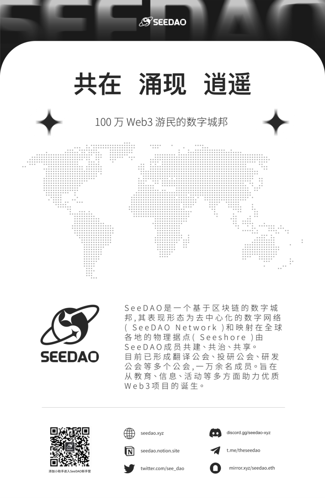

清迈投稿 | SeeDAO，迎来了两周年
作者: Rosa
分类:
SeeDAO, 两周年
“从DAO走向数字城邦”，期待SeeDAO在这一新叙事下带来新的惊喜！

2023年12月16日，在美丽的泰国清迈，SeeDAO庆祝其诞辰两周年！同时，正式发布了SeeDAO白皮书：《数字城邦》！从2021年起到2023年底，无论是西方还是东方，我们看到了DAO这个叙事从兴起、火热到冷静、解散。我们看到了BanklessDAO的艰难前行，FWB社区的重组.....DAO似乎不再作为一个独立赛道被人追捧，而是回归到了作为项目方维护社区关系的一个载体。但是令人欣慰的是SeeDAO作为华语社区最大的DAO，坚持走了下来，并且迈向了新的征程。我很早加入了SeeDAO, 抱着学习和体验的心态，选择成为SeeDAO翻译公会的贡献者。我想通过第一线实践了解DAO这个组织形式如何运转？如何在无信任基础上连接这么多不同背景、认知的个体走在一起为DAO组织做事？因此，很有幸地观察了SeeDAO的成长和蜕变，看到了SeeDAO的自我涅槃。我感受下来，SeeDAO存在如下的宝贵特质，使它一直在“变与不变”中能够摸索出一条自洽的发展路径。在行业对DAO探索的早期，大家普遍怀抱着对Autonomous（链上治理）的美好愿景，但是在现实的实践中“自治"始终是对社区共识能力极高的要求。如果社区的贡献者，对DAO组织缺乏统一理解、缺乏高度共识的时候，链上自治几乎是困难重重。SeeDAO并没有束缚于此，而是先以人治的方式来推动组织的建立和有效运转。这也是我观察到SeeDAO在最初就形成的社区基因。通过“人”的力量，来推动社区的共识，即通过社区的一批意见领袖者无私地向社区传播知识和价值观点，从而逐渐形成社区的文化与思想共识。因此，尽管SeeDAO在发展的过程中，它的战略方向做了几次转型，但是社区的共识能力始终很强，这离不开在早期建立的文化基因。在SeeDAO最新的价值愿景里，其凸显的是“连接、流动、交换、自由”。其本质还是“人”。从我观察或参与的DAO组织中，SeeDAO是将内容保持透明和公开化做到最彻底的社区。这也是我非常欣赏SeeDAO的一点。即使DAO不在链上，依然保持社区金库、社区账本、社区规则流程的透明化和公开化。这也是数字社区未来走向数字城邦很重要的基石。任何封闭的、不开放的组织，无法在数字世界获得真正的信任。唯有开放的生态、公开透明的组织机制，才能吸引更多的优秀贡献者来推动数字城邦的建立。在SeeDAO两周年发布会的当天，Frozen也特此宣布了SeeDAO OS操作系统的代码开源。期待未来有更多应用生态在此构建。DAO组织天然是与创作者经济相吻合的，DAO能够激发个体的、边缘的、自下而上的创新，天然吸引那些勇于追寻自我和自我创作的灵魂。从SeeDAO的几次转型来看，从最早的CryptoC的NFT发行到SeeDAO初期想打造的创作者社区，再到连接Web2到Web3的教育社区，再到如今构想的数字城邦。虽然DAO的定位一直在变，但是不变的是社区始终保持着让个体自由表达、自由创作和自由进退的氛围。或者这就是SeeDAO为大家提供的情绪价值。也就是白皮书里强调的“作”，大家自由"创作"的道路上，不仅是心流的体验，也是作品的传承。“从DAO走向数字城邦”，这是SeeDAO两周年发布会场的核心主题，这也代表了SeeDAO迈向Autonomous World的伟大愿景。这似乎又预示着DAO的生命周期从自动化治理走向自主治理的转换，最终又回归到自动化治理探索的原点。自治世界是主观现实与客观规则相融合的世界体。既有叙事化的边界又有形式化的逻辑，是“区块链基础上的人类社会”。这个叙事有点宏大，期待SeeDAO在这一新叙事下带来新的惊喜！作者 | Rosa
排版 | 小空
审核 | T1NG
